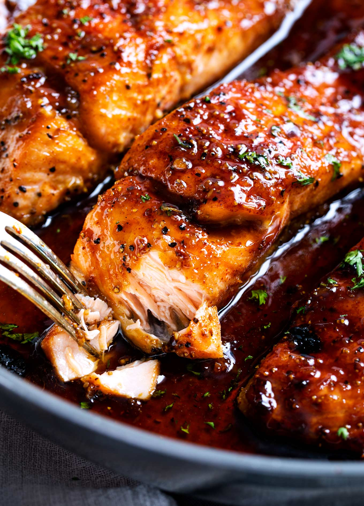

Honey Garlic Salmon Recipe

Salmon recipe with just a tad of honey garlic
Easy salmon with honey garlic sauce is one of the best salmon recipes.
It's garlicky, sweet and sticky with simple ingredients.
Takes only 15 mins to make this BOMB dinner.😋
Ingredients
- 12 oz. (340 g) salmon, cut into 2-3 fillet strips
- salt
- black peper
- 1 pinch cayenne pepper
- 2 tablespoon warm water
- 1 tablespoon warm water
- 1 1/2 teaspoons apple cider vinegar or lemon juice
- 1 tablespoon olive oil
- 3 cloves garlic, minced
- 1/2 lemon, sliced into wedges
- 1 tablespoon chopped parsley
Steps
- Season the surface of the salmon with salt, black pepper and cayenne pepper. Set aside.
- Mix the honey, water, apple cider vinegar or lemon juice and a pinch of salt together. Stir to combine well.
- Heat up an oven-safe skillet (cast-iron skillet preferred) on high heat. Add the olive oil. Pan-fry the salmon, skin side down first, for about 1 minute. Turn the salmon over and cook for 1 minute. Turn it over again so the skin side is at the bottom.
- Add the garlic into the pan, saute until slightly browned. Add the honey mixture and lemon wedges into the skillet, reduce the sauce until it's sticky.
- Finish it off by broiling the salmon in the oven for 1 minute or until the surface becomes slightly charred (optional step).
- Top the salmon with parsley and serve immediately.